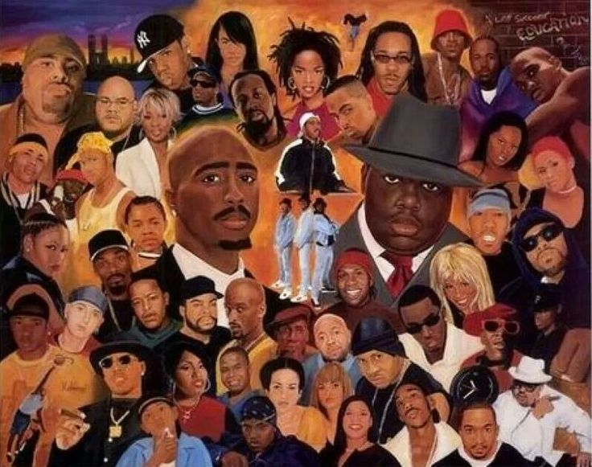
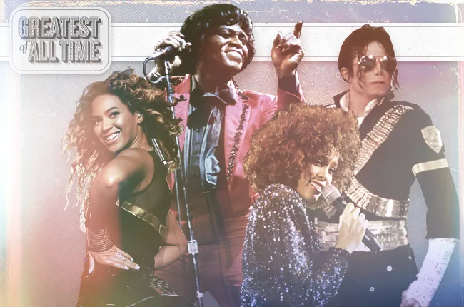
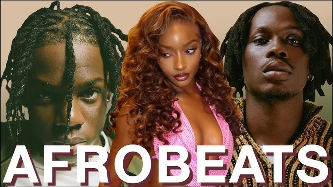

Music is the universal language of mankind. It transcends boundaries, cultures, and time. It has the power to evoke emotions, tell stories, and most importantly connect people in ways that words alone cannot. In this digital age, we have access to a vast array of music from around the world, allowing us to explore different genres, artists, and styles. Whether you're a fan of classical symphonies or modern pop hits, there's something for everyone in the world of music.



Music has changed my life for the better, and I hope with this website that it can do the same for you. We will be exploring some of the top genres in my opinion and the pioneers that allowed us to reach this point. I hope you enjoy this journey through the world of music as much as I have enjoyed creating it.